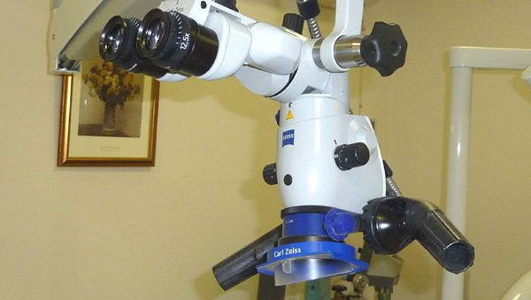
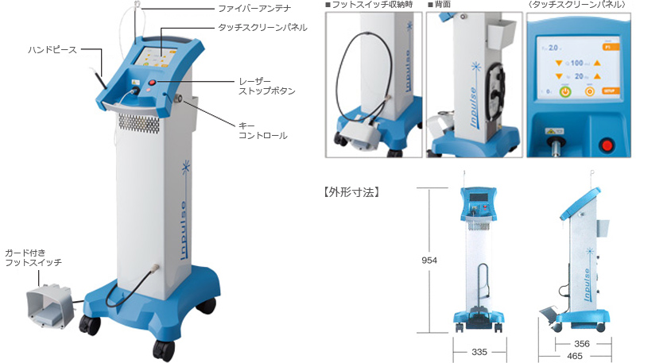

一般歯科
予防歯科
定期健診： 初期むし歯の発見が重要です。
ＰＭＴＣ：（プロフェショナル・メカニカル・トゥース・クリーニング）プロによる歯のクリーニング
シーラント： 奥歯の溝を薄いプラスチックで塞ぐ虫歯予防法です。
フッ素塗布： むし歯の出来にくい歯を作ります。
ブラッシング指導： 歯科衛生士が丁寧に指導します。
電子顕微鏡

＊歯科用電子顕微鏡
当院はマイクロスコープ（歯科用顕微鏡）を使用して患部を拡大しながら繊細な治療を実現しております。
顕微鏡（マイクロスコープ）を使った治療の大きな特徴は、肉眼では見えないものを3倍から30倍程度にまで拡大観察できるということです。
肉眼では見えないぐらい小さなむし歯を発見すれば初期段階での治療が出来ますし、暗く狭い根管部分（歯の根の部分、神経が入っている管）も、
顕微鏡治療では明るく拡大出来ますので、従来のレントゲンを参考にしながら経験と勘を頼りに施す治療とは大きな差が出ます。
その他、肉眼では見えないぐらいの被せ物や詰め物のズレなど不適合部分から入り込んだ菌が、むし歯を発現させているということが少なくありません。
歯周病治療、型取り、インプラントなど、歯科治療のあらゆる分野でメリットがあります。
根管とは、歯の中の神経（歯髄）が入っている管のことです。
ここがむし歯で感染すると、残念ながら神経を取り除かなければなりません。
しかし、顕微鏡（マイクロスコープ）で根管内を詳細に観察することが可能になると、感染源の見落としをかなり減らすことができ、
細部にまで治療が出来るようになり、治療の成功率は飛躍的に向上しました.
レーザー

＊レーザー治療
歯科用パルス発振型 Nd：YAGレーザー インパルス デンタルレーザー
Nd:YAGレーザー治療は患者様本位の治療を目指しています。
20世紀に発明されたレーザーは、今日、医療の分野でも広く活用され始めています。
歯科領域においては安全かつ有効な治療器具として臨床に応用されています。
用途に合わせた最適なレーザーを治療に取り入れることで患者様満足度が高まります。
効能・効果〈適用部位〉：生体組織の切開、止血、凝固、蒸散〈歯肉および口腔粘膜（軟組織に適用）〉
適応症：歯肉切除、辺縁性歯周炎、根尖性歯周症、歯肉炎、アフタ性口内炎、メラニン色素沈着など。
＊コアの取れない症例等に使用。
歯科について
＊日本歯科医師連盟 出典
肺炎は口で止められる
噛むことの八大効果
ひ…肥満予防
み…味覚の発達
こ…言葉の発音がはつきり
の…脳の発達
歯…歯の病気を防ぐ
が…がんの予防
いー…胃腸の働きを促進
ぜ…全身の体力向上と全力投球
＊青春出版 米山武義院長著 出典